インラインアセンブラ
インラインアセンブラの概要
-
インラインアセンブラ (inline assembler)はコンパイラの機能の一部であり， 高級言語(例えばC言語)中にアセンブリコードを記述する(埋め込む)ことを可能にします
- 埋め込んだC言語中のアセンブリコードをインラインアセンブリコードといいます
-
なるべく(アセンブリコードだけで記述するのではなく)，C言語中でインラインアセンブラを使うべきです
- アセンブリコードの生産性・保守性・移植性は非常に低いからです
- インラインアセンブラを使えば「大半のコードはC言語で記述し，どうしてもアセンブリコードが必要な部分だけインラインアセンブラを使って書く」ことで，アセンブリコードの記述量を減らせます
- この資料では，Linuxカーネルのアセンブリコードは 0.8% で，ほとんどがC言語だそうです (ただし，Cコード中のインラインアセンブリコードは正しくカウントされていないかも知れません)
-
GCCではasm構文を使ってインラインアセンブリコードを記述します
-
例:
nop命令を埋め込んだ例．実行しても何も起きないのであまり意味はないです． これは基本asm構文の例です．// inline-asm1.c (基本asm構文の例) int main (void) { asm ("nop"); }$ gcc -g inline-asm1.c $ ./a.out (何も起きない) -
例: スタックポインタ
%rspの値を変数addrに格納して表示する例． これはC言語だけでは書けないので意味があります． これは拡張asm構文の例です．// inline-asm2.c (拡張asm構文の例) #include <stdio.h> int main (void) { void *addr; asm volatile ("movq %%rsp, %0": "=m"(addr)); printf ("rsp = %p\n", addr); }$ gcc -g inline-asm2.c $ gdb ./a.out (gdb) b main Breakpoint 2 at 0x555555555175: file foo.c, line 3. (gdb) r Breakpoint 2, main () at foo.c:3 3 { (gdb) n 5 asm ("movq %%rsp, %0": "=m"(addr)); (gdb) n 6 printf ("rsp = %p\n", addr); (gdb) p/x $rsp $2 = 0x7fffffffdee0 ❶ (gdb) c Continuing. rsp = 0x7fffffffdee0 (printfの出力．❶の%rspの値と同じになっている) (gdb) q
-
-
インラインアセンブラの機能はC言語規格ではなく，コンパイラの独自拡張です．
- インラインアセンブラの記法はコンパイラごとに異なります
gcc -std=c11 -pedanticなど，言語規格への遵守を強くするオプションを指定すると，コンパイルエラーになることがあります．asmを__asm__にすればコンパイルできる場合もあります．
__asm__は予約識別子
「_と大文字」あるいは「__(下線2つ)と小文字」で始まる識別子(名前)は
予約識別子 (予約語とは別のものです)と呼ばれ，
言語処理系が定義するための名前です．
__asm__も予約識別子なので，アプリケーションプログラムが定義することはできず，
二重定義を避けられるというわけです．
(二重定義を避けられても，asm構文がGCCの独自拡張であり，
C言語規格には違反であることは同じですが…)
- インラインアセンブラの使い方の注意(概要): コンパイラの最適化の影響をなるべく避けるため，以下に注意:
- なるべく，基本asm構文ではなく拡張asm構文を使う
- 拡張asm構文には修飾子
volatileを必ず付ける - なるべくまとめて，1つの拡張asm構文で記述する
- 必要なら
gcc -Sで出力したアセンブリコードを(意図通りにasm構文が展開されているかを)確認する - 必要なら「人工的な変数の依存関係」を導入する
- コンパイラの最適化により，拡張asm構文が移動させられたり，場合によっては
消去される可能性があります．
gcc -Sの出力を確認しましょう．
基本asm構文
-
基本asm構文は以下の形式です
asm 修飾子 ( "アセンブリコード" ); -
以下は
nop命令のみを基本asm構文で指定した例です．asm ("nop"); -
基本asm構文では(拡張asm構文でも)機械語命令以外に，ラベル定義，アセンブラ命令，コメントも書けます．
asm ("foo: .text; nop # this is a comment"); -
修飾子は
volatileとinlineを指定可能です
| 修飾子 | 説明 |
|---|---|
volatile | (ある程度)最適化を抑制する (基本asm構文では指定しなくても volatileとみなされる) |
inline | この基本asm構文を含む関数がインライン化されやすい ようにasm構文中の機械語命令のバイト数を少なく見積もる |
-
アセンブリコードを指定する文字列中では生の改行文字を入れてはいけません(
\nなら良い)-
まず，最適化の影響を避けるため，なるべく1つのasm構文にまとめるべきです． 最適化がasm構文を移動したり削除したり するからです．
// 良くない例 (1つのasm構文にまとめるべき) asm ("nop"); asm ("nop"); asm ("nop"); -
まとめる際は見やすさのため，各行ごとに文字列定数に分割した上で改行するの良いですし，これが最もお勧めです．
// OK & お勧め asm ("nop\n\t" "nop\n\t" "nop\n\t");- カンマで区切られていない文字列定数の並び
(ここでは
"nop\n\t" "nop\n\t" "nop\n\t") はコンパイルの初期段階で1つの文字列として連結され，"nop\n\tnop\n\tnop\n\t"になります． \tは無くてもOKです．出力されたアセンブリコードのインデントのためにつけています．
- カンマで区切られていない文字列定数の並び
(ここでは
-
文字列定数の途中で改行してはいけません． (文字列定数の途中で改行するとコンパイルエラーになります)
// NG (コンパイルエラー) asm ("nop nop nop");
-
-
基本asmコードはCのコードと協調(例: Cの変数へのアクセス)ができません． → 拡張asm構文を使え
// inline-bad.c
#include <stdio.h>
long x = 111;
long y = 222;
int main ()
{
asm ("movq x(%rip), %rax; addq %rax, y(%rip)");
printf ("x = %ld, y = %ld\n", x, y);
}
$ gcc -g inline-bad.c
$ ./a.out
x = 111, y = 333
上記のように基本asm構文でも無理やりCの変数xやyにアクセスできますが(これは悪い例)，
「コンパイラが変数xをx(%rip)として出力する」ことを大前提にしたコードです．つまり「たまたま動いている」だけです．
このため，多くの場合，基本asm構文ではなく拡張asm構文を使うべきです．
上記の例を拡張asm構文で書き直すと以下になります．
("+rm"の+は指定した変数y(%0)が，読み書きの両方で使われていることを示し，
"rm"は「レジスタかメモリ参照として展開せよ」という指示(制約)です)．
// inline-good.c
#include <stdio.h>
long x = 111;
long y = 222;
int main ()
{
asm volatile ("movq %1, %%rax; addq %%rax, %0"
: "+rm" (y) // 変数yのアセンブリコードを%0で展開
: "rm" (x) // 変数xのアセンブリコードを%1で展開
: "%rax" // レジスタ%raxの破壊の存在をコンパイラに伝達
);
printf ("x = %ld, y = %ld\n", x, y);
}
- その他の注意点
- 基本asm構文は関数内と関数外の両方で使える(拡張asm構文は関数内のみ)が，
関数外で使う場合は
volatileもinlineも付けてはいけない． - asm構文から他のasm構文へのジャンプはしてはいけない． (拡張asm構文ならCのラベルへのジャンプはしても良い)．
- asm構文をGCCが複製する可能性があり(ループ展開とかで)，その結果，
シンボルの2重定義などが起こる可能性がある．これを避けるには
%=を使う(ここでは詳細省略) - 基本asm構文ではアセンブリコードをそのまま出力する．レジスタ名も
%rspをそのまま出力する．一方，拡張asm構文中は%を特別扱いするので，%%rspと書く必要があるので注意 (printfのフォーマット中で%を出力するために%%と書くのと同じ)． - 基本asm構文は
-masmで指定された方言に従うので，asm ("pushq $99");はgcc -masm=intelとするとコンパイルエラーになる．
- 基本asm構文は関数内と関数外の両方で使える(拡張asm構文は関数内のみ)が，
関数外で使う場合は
拡張asm構文
拡張asm構文の例 (引数を%順番で指定)
// inline-asm2.c (拡張asm構文の例)
#include <stdio.h>
int main (void)
{
void *addr;
asm volatile ("movq %%rsp, %0": "=m"(addr));
printf ("rsp = %p\n", addr);
}

-
拡張asm構文はコロン
:で区切られた引数 (この場合は"=m" (attr))を持ちます． 引数は対応するアセンブリコードに変換した上で，%0などの部分を展開します．- 引数が複数個ある場合は，先頭から順番に
%1,%2, ... と参照します．
- 引数が複数個ある場合は，先頭から順番に
-
上の例ではCの変数
addrを対応するメモリ参照-16(%rbp)に変換して，%0の場所に展開しています．- 拡張asm構文の第1引数(命令テンプレート)中の
%0などは展開対象です． つまり，%は特別扱いしています．%文字自体を使うには%%とする必要があります． このため，レジスタ%rspは命令テンプレート中で%%rspとなっています． "=m"はアセンブリコードに変換する際の指示(制約)です．=は出力，mはメモリ参照として展開せよという意味になります．
- 拡張asm構文の第1引数(命令テンプレート)中の
拡張asm構文の例 (引数を%名前で指定)
// inline-asm3.c
#include <stdio.h>
int main (void)
{
void *addr;
asm volatile ("movq %%rsp, %[addr]": [addr] "=m"(addr));
printf ("rsp = %p\n", addr);
}
- 展開する場所(例:
%0)は順番だけでなく名前でも指定できます． - 上の例では変数
addrに，[addr]とすることでaddrという名前をつけて， 命令テンプレート中で%[addr]と参照しています．- ここではたまたま変数名
addrと名前addrを同じにしましたが，別にしてもOKです "=m (addr)"のaddrの部分には変数だけでなくC言語の式を書けます
- ここではたまたま変数名
拡張asm構文の例 (グルーコードが生じる例)
- グルーコードが生じる例 (単純な例)
// inline-asm4.c
#include <stdio.h>
int main (void)
{
void *addr;
asm volatile ("movq %%rsp, %0": "=r"(addr));
printf ("rsp = %p\n", addr);
}
$ gcc -S inline-asm4.c
$ cat inline-asm4.s
(中略)
#APP
# 6 "inline-asm4.c" 1
❶ movq %rsp, %rax
# 0 "" 2
#NO_APP
❷ movq %rax, -8(%rbp)
-
inline-asm2.cの制約"=m"(メモリ参照)を"=r"(レジスタ)に変更してみます．すると， 制約の指定がレジスタなので，%0は❶%raxに展開されました． しかし，最終的な格納先である変数addrはメモリ (-8(%rbp))だったので， ❷movq %rax, -8(%rbp)が追加され，変数addrに代入されるようになりました． -
この追加された命令❷をグルーコード(glue code)といいます． グルーは接着剤という意味です． グルーコードはCのコードとインラインアセンブリコードの間の隙間を 接着する役割を担ってます．
-
この場合，制約を
=rと指定した結果，inline-asm2.cでは不要だった グルーコードが増えてしまいました．制約はなるべく緩く指定して， コンパイラに最適な出力を任せる方が良いことが多いでしょう． この場合は，レジスタでもメモリでも良いので，"rm"と指定するのが最適だと思います．
グルーコードが生じる例 (rdtscpの例)
// rdtscp.c
#include <stdio.h>
#include <stdint.h>
uint64_t rdtscp (void) {
uint64_t hi, lo;
uint32_t aux;
asm volatile ("rdtscp":"=a"(lo), "=d"(hi), "=c"(aux));
printf ("processor ID = %d\n", aux);
return ((hi << 32) | lo);
}
int main (void) {
printf ("%lu\n", rdtscp ());
}

$ gcc -S rdtscp.c
$ less rdtscp.s
(一部略)
#APP
# 8 "rdtscp.c" 1
rdtscp
# 0 "" 2
#NO_APP
❶ movq %rax, -16(%rbp)
❷ movq %rdx, -8(%rbp)
❸ movl %ecx, -20(%rbp)
rdtscp命令には明示的なオペランドは無く， 64ビットのタイムスタンプカウンタの値を%edx:%eaxに格納します． (そしてプロセッサIDを%ecxに格納します)．gcc -Sの出力を見ると，rdtscp命令に加えてグルーコード❶❷❸が追加されています．- ❶❷❸は
rdtscp命令がレジスタに格納した値を変数hi,lo,auxに 格納しています．
- ❶❷❸は
拡張asm構文の形式
-
拡張asm構文の形式は次の2種類があります． 以下ではコロン
:の手前で改行していますが，これは見やすさのためだけで， 1行で書いても構いません．asm 修飾子 (命令テンプレート : 出力オペランド列 : 入力オペランド列 # 省略可能 : 破壊レジスタ列 # 省略可能 );asm 修飾子 (命令テンプレート : 出力オペランド列 : 入力オペランド列 : 破壊レジスタ列 : gotoラベル列 );-
最初の形式の場合，出力オペランド列より後は(不要なら)省略可能です．
: 入力オペランド列を省略した場合は，: 破壊レジスタ列も省略しなければいけません． 途中に空の部分がある場合はasm ("nop":::"%rax");などとコロン:を並べます． 一方，2番目の形式ではコロン:は省略できません． -
拡張asm構文は関数中でのみ使えます．関数の外では使えません．
-
修飾子は以下を指定可能です．
修飾子 説明 volatile(ある程度)最適化を抑制する (拡張asm構文には常に指定を推奨) inlineこの基本asm構文を含む関数がインライン化されやすい
ようにasm構文中のasm命令(バイト数)を少なく見積もるgoto命令オペランド中から「gotoラベル列」中のCラベルにジャンプする可能性を示す
(gotoを指定すると，volatileの指定なしでもvolatileになる)- ○○列の中身が複数ある場合はカンマ
,で区切ります．
-
-
拡張asm構文の例 (
goto無し)
// inline-asm5.c
#include <stdio.h>
int main (void)
{
int x = 111, y = 222, z;
// z = x + y;
asm volatile ("movl %1, %%eax; addl %2, %%eax; movl %%eax, %0"
: "=rm" (z)
: "rm" (x), "rm" (y)
: "%eax" );
printf ("x = %d, y = %d, z = %d\n", x, y, z);
}

- 命令テンプレート中の
%0,%1,%2は出力オペランド列と入力オペランド列中のz,x,yに対応します．- 名前を使うと，順番ではなく，
%[z],%[x],%[y]と名前での参照も可能です．
- 名前を使うと，順番ではなく，
- 例えば，出力オペランド列中の
"=rm" (z)は1つの出力オペランドです．"=rm"は制約を示していて，"="はこのオペランドが出力であること，"rm"はこのオペランドをレジスタかメモリ参照として%0を展開することを指示しています． - 命令テンプレート中で値を破壊するレジスタは「破壊レジスタ列」で指定する．
- この指定が無いとコンパイラは「命令テンプレート中でどのレジスタが破壊されるか」が分からないからです．コンパイラが気づかず同じレジスタを使うと， 命令テンプレート中のレジスタ書き込みにより，値が壊れてしまいます．
- 出力オペランド列で指定したレジスタは破壊レジスタ列で指定する必要はありません
-
特別な記法として，メモリの値を壊す場合は "memory", フラグレジスタの値を壊す場合は "cc" を「破壊レジスタ列」に指定する．
-
コンパイラは必要に応じて，命令テンプレートの前に「レジスタの値をメモリに退避(書き戻し)」，命令テンプレートの後に「メモリの値をレジスタに復帰させる」コードを追加します
-
拡張asm構文の例 (
gotoあり)
// inline-asm6.c
#include <stdio.h>
int add (unsigned char arg1, unsigned char arg2)
{
asm goto ("addb %1, %0; jc %l[overflow]" // ❷ %l3 でも可
: "+rm" (arg2)
: "rm" (arg1)
:
: overflow ); // ❶
return arg2;
overflow:
printf ("overflow: arg1 = %d, arg2 = %d\n", arg1, arg2);
return arg2;
}
int main (void)
{
printf ("result = %d\n", add (254, 1));
printf ("result = %d\n", add (255, 1));
}
$ gcc -S inline-asm6.c
$ cat inline-asm6.c
(中略)
movl %edi, %edx
movl %esi, %eax
movb %dl, -4(%rbp)
movb %al, -8(%rbp)
movzbl -8(%rbp), %eax
#APP
# 5 "inline-asm6.c" 1
addb -4(%rbp), %al; jc .L2
# 0 "" 2
#NO_APP
(中略)
.L2:
$ gcc -g inline-asm6.c
$ ./a.out
result = 255
overflow: arg1 = 255, arg2 = 0
result = 0
-
命令テンプレート中からCラベルにジャンプする可能性がある場合，
goto付きの拡張asm構文を使う必要があります． その場合はジャンプする可能性があるCのラベルを「gotoラベル列」に列挙します(ダブルクオート"では囲みません)． -
上の例では，❶「gotoラベル列」に
overflowを指定しています． 命令テンプレート中でラベルを参照するには次のどちらかを使います．- 引数の順番を使う: "+"は入出力で1回ずつ出現すると数えるので，
出力オペランドが1つ (
%0)，入力オペランドが2つ(%1,%2)になるので， ラベルoverflowは(0から数えて)3番目になります．頭に%l(%と小文字のエル)をつけて，%l3とします． - 引数の名前を使う:
%lとラベル名で，❷%l[overflow]とします．
- 引数の順番を使う: "+"は入出力で1回ずつ出現すると数えるので，
出力オペランドが1つ (
-
ある実行パスで出力を設定しない場合，入力でも出力でも使われないことになり， 出力コードがおかしくなることがあるそうです (マニュアルによると)．その場合は制約
+を使って，必ず入力として使うと指定すれば大丈夫だそうです(試してません)．
出力オペランド列と入力オペランド列
- 出力オペランド列と入力オペランド列はどちらも以下の形式になります
"制約文字列" (Cの式), "制約文字列" (Cの式), …
- 「Cの式」は変数を指定することが多いですが，一般的なCの式でもOKです． ただし，出力オペランドの場合は「Cの式」は左辺値(アドレスを持つ式)でなければいけません．
- 使用できる制約文字列は次の節で示します．
制約
制約の一覧表
代表的な制約を以下に示します． 他の制約はGCCインラインアセンブラを参照下さい．
- 入出力を指定する制約
| 制約 | 説明 |
|---|---|
= | オペランドは出力専用(指定するなら必ず1文字目) |
+ | オペランドは入出力(指定するなら必ず1文字目) |
| (指定なし) | オペランドは入力専用 |
- 汎用の制約
| 制約 | 説明 |
|---|---|
r | オペランドはレジスタ |
m | オペランドはメモリ |
i | オペランドは整数即値 |
g | オペランドは制約無し ("rmi"と同じ) |
& | オペランドは早期破壊レジスタ |
0 | マッチング制約 (1〜9も同じ) |
% | オペランドは交換可能(可換) 書き込みオペランドには指定不可 |
-
x86用の制約 (レジスタ)
制約 説明 a%rax,%eax,%ax,%alのいずれかb%rbx,%ebx,%bx,%blのいずれかc%rcx,%ecx,%cx,%clのいずれかd%rdx,%edx,%dx,%dlのいずれかD%rdi,%edi,%di,%dilのいずれかS%rsi,%esi,%si,%silのいずれかA制約 a,dのいずれかQ制約 a，b，c，dのいずれかq任意の整数レジスタ ( %rspと%rbpは使わない)Ucaller-saveレジスタ q制約は，-fomit-frame-pointerオプションをgccに付けると%rbpを使用する (%rbpが汎用レジスタとして使えるようになるため)
- x86用の制約 (定数)
| 制約 | 説明 |
|---|---|
I | 範囲0〜31の整数 (32ビットシフト用) |
J | 範囲0〜63の整数 (64ビットシフト用) |
K | 範囲-128〜127の整数 (符号あり8ビット整数定数用) |
L | 0xFF, 0xFFFF, 0xFFFFFFFF (マスク用) |
M | 0, 1, 2, 3 (メモリ参照のスケール用) |
N | 範囲0〜255の整数 (in, out命令用)) |
制約m(メモリ)と制約r(レジスタ)の違い
// inline-asm2.c
#include <stdio.h>
int main (void)
{
void *addr;
asm volatile ("movq %%rsp, %0": "=m"(addr));
printf ("rsp = %p\n", addr);
}
$ gcc -S inline-asm2.c
$ cat inline-asm2.s
(中略)
movq %rsp, -16(%rbp)
// inline-asm4.c
#include <stdio.h>
int main (void)
{
void *addr;
asm volatile ("movq %%rsp, %0": "=r"(addr));
printf ("rsp = %p\n", addr);
}
$ gcc -S inline-asm4.c
$ cat inline-asm4.s
(中略)
movq %rsp, %rax
movq %rax, -16(%rbp)
- 上のコードで制約
m(メモリ)を使うと，%0はメモリ参照-16(%rbp)に展開されました．-16(%rbp)は変数addrなので，変数addrへの代入はこれで終了です． - 一方， 制約
r(レジスタ)を使うと，%0はレジスタ%raxに展開されました． また，%raxの値をaddrに代入するために， グルーコードmovq %rsp, -16(%rbp)が追加されました．
読み書きするオペランドには制約+を使う
// inline-asm7.c
#include <stdio.h>
int main (void)
{
long in = 111, out = 222;
asm volatile ("movq %1, %0": "=rm"(out): "rm" (in)); // out = in;
printf ("in = %ld, out = %ld\n", in, out);
}
// inline-asm8.c
#include <stdio.h>
int main (void)
{
long in = 111, out = 222;
asm volatile ("addq %1, %0": "+rm"(out): "rm" (in)); // out += in;
printf ("in = %ld, out = %ld\n", in, out);
}
// inline-asm9.c
#include <stdio.h>
int main (void)
{
long in = 111, out = 222;
asm volatile ("addq %1, %0": "=rm"(out): "rm" (in), "0" (out)); // out += in;
printf ("in = %ld, out = %ld\n", in, out);
}

inline-asm7.cの❶はmovq命令なので，outは出力専用です． このため，入出力の制約は=を指定しています．- 一方，
inline-asm8.cの❷はaddq命令なので，outは入力と出力の両方になります． このため，入出力の制約は+を指定しています． addq命令に対してはマッチング制約 (ここでは"0")を使う方法もあります．inline-asm9.cの❸では，出力オペランド列ではoutに=を指定し， 入力オペランド列にもoutを指定し，その制約に"0"を指定しています． この"0"の指定で「このオペランドoutは出力オペランドの%0と同じオペランドだ」と伝えているのです．- マッチング制約で「同じオペランドだ」と指定された場合， コンパイラはそれらのオペランドに同じレジスタやメモリ参照を 割り当てようとします．
早期破壊オペランド制約 &
要約:
- 入力オペランドの参照よりも前に，出力オペランドへの代入がある場合は，
早期破壊オペランド制約
&を使う必要がある． - 早期破壊オペランド制約
&は「同じレジスタに割り当てるな」という指示- cf. マッチング制約は「同じレジスタに割り当てろ」という指示
// early-clobber.c
#include <stdio.h>
int main (void)
{
int a = 20, b;
asm volatile ("movl $10, %0; addl %1, %0"
: "=r"(b) : "r"(a)); // b = 10; b += a;
printf ("b = %d\n", b);
}
// early-clobber2.c
#include <stdio.h>
int main (void)
{
int a = 20, b;
asm volatile ("movl $10, %0; addl %1, %0"
: "=&r"(b) : "r"(a)); // b = 10; b += a;
printf ("b = %d\n", b);
}
$ gcc -g early-clobber.c
$ ./a.out
b = 20 結果が正しくない
$ gcc -g early-clobber2.c
$ ./a.out
b = 30 結果は正しい

- GCCは「命令テンプレートでは，入力オペランドを全て参照した後で， 出力オペランドへ代入している」という仮定をしています．
- その理由は多くの場合，その仮定は成り立つし，成り立てば，入力オペランドと出力オペランドに同じレジスタを割り当てられるからです．
- OKな例:
y = x + 3;はxを参照した後で，yに代入しています．ですので，xとyに同じレジスタ%eaxを割り当てて，addl $3, %eaxとしてもOKです． - NGな例:
b = 10; b += a;はbへの代入の後で，入力aを参照しています． GCCの仮定に反しているのに，aとbに同じレジスタ%eaxを割り当ててmovl $10, %eax; addl %eax, %eaxとしてしまうと，aの元の値が破壊されてしまいます．これが上のearly-clobber.cの状況です．
- OKな例:
early-clobber.c(上図の左)では，出力の制約を❶=としているだけなので，%0と%1が同じレジスタ%eaxになり❷， 意図通りの計算結果になりません(aの初期値20が失われています)．- これを防ぐには 早期破壊オペランド制約
&(early-clobber operand constraint)を 制約に指定します❸．その結果，%0と%1には別のアドレスが割り当てられました．
破壊レジスタ列
-
出力オペランド列に指定したレジスタやメモリ以外への書き込みがある場合は， 破壊レジスタ列に指定する必要があります． コンパイラは指定されたレジスタやメモリへの読み書きが整合する範囲でのみ， 最適化のためのasm構文の移動を考えてくれます．
-
レジスタの破壊を指定して退避される例
int main ()
{
asm ("movl $999, %%ebx" :::"%ebx");
}
❶ pushq %rbx # %rbxの退避
movl $999, %ebx # %rbxの上位32ビットはクリアされる
❷ movq -8(%rbp), %rbx # %rbxの回復
破壊レジスタ列に%rbxを指定すると，コンパイラは前後に
%rbxの退避❶と回復❷のコードを付け足します．
%rbxはcallee-saveレジスタなので，main関数からリターンする前に，
%rbxの値を元の値に戻す必要があるからです．
- メモリの破壊を指定してコードが変化する例
// clobber-mem.c
#include <stdio.h>
int x = 111, y = 222;
int main ()
{
y = x;
// asm volatile ("":::"memory");
return x;
}
// clobber-mem2.c
#include <stdio.h>
int x = 111, y = 222;
int main ()
{
y = x;
asm volatile ("":::"memory"); // ❶
return x;
}
$ gcc -S clobber-mem.c
$ cat clobber-mem.s
(一部省略)
main:
movl x(%rip), %eax
movl %eax, y(%rip)
ret
$ gcc -S clobber-mem2.c
$ cat clobber-mem2.s
(一部省略)
main:
❷ pushq %rbp
❷ movq %rsp, %rbp
❸ movl x(%rip), %eax
movl %eax, y(%rip)
# asm volatile ("":::"memory");
❹ movl x(%rip), %eax
❷ popq %rbp
ret
- 上のコードで
"memory"を付けてメモリの破壊の存在をコンパイラに伝えた所， 以下の2つの変化がありました- スタックフレームが壊されないように，
main用のスタックフレームを作りました❷ - 変数
xの値が変化しているかも知れないので，❸で読んだ値は使わず， メモリが変化したと言われた後の ❹で改めて読んでいます．
- スタックフレームが壊されないように，
- なお，上の命令テンプレート❶は空ですが，コンパイラはメモリ破壊を信じてくれています
GCCは%以外の命令テンプレートの中身を見ない
// inline-hoge.c
#include <stdio.h>
long x = 111;
long y = 222;
int main ()
{
asm volatile ("hogehoge %1, %0": "+rm" (y): "rm" (x));
printf ("x = %ld, y = %ld\n", x, y);
}
movq x(%rip), %rax
movq y(%rip), %rdx
hogehoge %rax, %rdx
movq %rdx, y(%rip)
- GCCは(
%を除いて)命令テンプレートの中身は見ません． 入出力オペランド列や破壊レジスタ列などの情報だけを使って，%0などの部分を展開したり，グルーコードを出力します． - その証拠に，上の例では存在しない命令
hogehogeに対して，上記の展開とグルーコード付加をGCCは行いました．
局所変数をレジスタ割当にする
// local-reg.c
#include <stdio.h>
int main ()
{
register long foo asm ("%r15") = 999;
printf ("%ld\n", foo);
}
- 非常に頻繁に使う局所変数をレジスタ名を指定してレジスタ割当にしたい場合があります．その場合は上記の記法で指定できます．
- 注意:
registerは必要です．static,const,volatileなどはつけてはいけません．- この記法は指定したレジスタを予約するものではありません． コンパイラは他の部分で指定したレジスタを上書きするので，それを前提として使う必要があります．
アセンブラ方言の扱い
- GCCはアセンブリ記法の方言を出力できます．例えば，x86-64では
gcc -masm=attでAT&T記法を，gcc -masm=intelでIntel記法を出力できます． (デフォルトはAT&T記法です) gccへのオプション (-masm=att,-masm=intel)でどちらの記法を出力するか切り替えられますが，インラインアセンブリコードの中身は自動的には切り替わりません．- どちらのオプションが指定されても大丈夫にする方法がGCCにはいろいろ用意されています．．例えば，以下の記法は
int main ()
{
asm volatile ("{movslq %%eax, %%rbx | movsxd rbx,eax}":);
}
AT&T形式の際は movslq %%eax, %%rbxを出力し，Intel形式の時は
movsxd rbx,eaxを出力します．
(このように命令テンプレート中で，{, |, }も, (そして =も)
特別な意味を持つので，これらの文字自身を出力したい場合は，
それぞれ，%{, %|, %}, %=と記述する必要があります)．
つまり，インラインアセンブリコードを書く人が
AT&T形式とIntel形式の記述の両方を併記する必要があります．
さらに，
int main ()
{
int x = 111;
asm volatile ("inc %q0":"+r" (x));
}
と書くと，%q0の部分は，AT&T形式に対しては例えば%rax，Intel形式に対してはraxなどと展開します．詳細はGCCインラインアセンブラの
x86 Operand Modifiersを御覧ください．